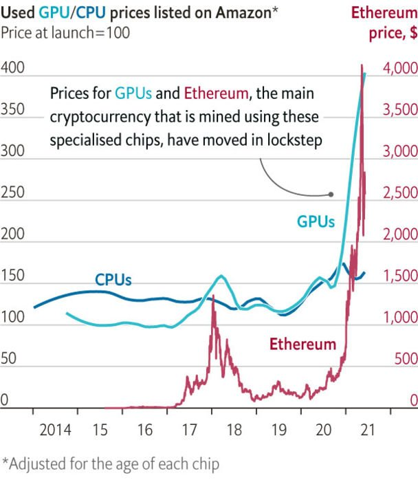
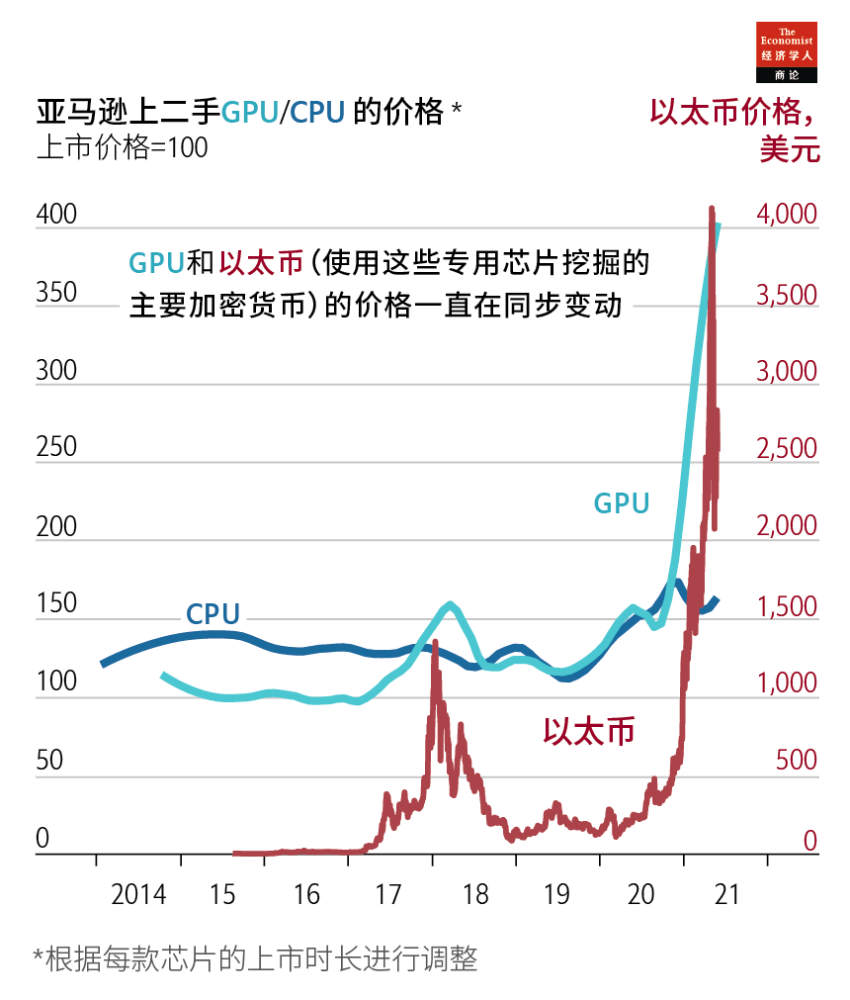
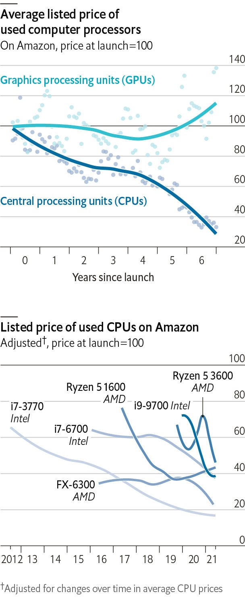
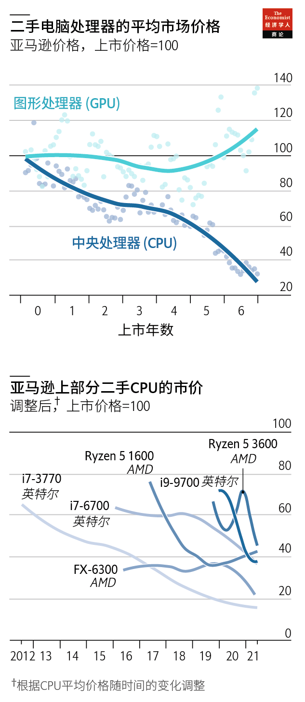

2021-07-06T09:12:10+00:00
ETH and chips
以太币和芯片
以太幣和芯片
Crypto-miners are probably to blame for the graphics-chip shortage
显卡芯片短缺可能要归咎于加密货币挖矿
顯卡芯片短缺可能要歸咎於加密貨幣挖礦
Secondhand graphics-card prices move nearly in lockstep with those of Ethereum
二手显卡的价格几乎与以太币的价格同步波动
二手顯卡的價格幾乎與以太幣的價格同步波動
THE PAST year has been rough for gamers. Just as covid-19 brought in-person entertainment to a halt, the cost of graphics processing units (GPUs) needed to run computer games soared. Graphics cards like Nvidia’s RTX 3080, with a suggested price of $699, have fetched up to $2,400. When bricks-and-mortar stores get a few in stock, buyers queue up overnight.
过去的一年对游戏玩家来说不好过。新冠疫情令聚集性娱乐活动暂停，而玩游戏所需的图形处理器（GPU）价格猛涨。像英伟达（Nvidia）RTX 3080这样的显卡的建议售价为699美元，现在已经涨到了2400美元。当实体店有少许现货时，买家会通宵排队。
過去的一年對遊戲玩家來說不好過。新冠疫情令聚集性娛樂活動暫停，而玩遊戲所需的圖形處理器（GPU）價格猛漲。像英偉達（Nvidia）RTX 3080這樣的顯卡的建議售價為699美元，現在已經漲到了2400美元。當實體店有少許現貨時，買家會通宵排隊。
Prices for all types of chips have risen of late, for myriad reasons. Silicon wafers are scarce. Manufacturers have suffered disruptions. Scalpers use bots to buy up inventory. Chinese-made chips face American tariffs. And demand for personal computers is the highest since 2010.
近来各种芯片都已涨价，原因有很多。硅片稀缺。制造商遭遇生产中断。黄牛党用机器人程序抢购库存。中国制造的芯片面临美国的关税。另外，对个人电脑的需求达到了2010年以来的最高水平。
近來各種芯片都已漲價，原因有很多。硅片稀缺。製造商遭遇生產中斷。黃牛黨用機器人程序搶購庫存。中國製造的芯片面臨美國的關稅。另外，對個人電腦的需求達到了2010年以來的最高水平。
Nonetheless, data from Keepa, a website that tracks Amazon listings, show that asking prices for GPUs have risen faster than have those for central processing units (CPUs). The data also suggest that miners of Ethereum, the second-largest cryptocurrency, are to blame for gamers’ woes.
不过，追踪亚马逊商品信息的网站Keepa的数据显示，GPU的要价比中央处理器（CPU）上涨得更快。数据还表明，第二大加密货币以太币（Ethereum）的挖矿机要为游戏玩家的困境负责。
不過，追蹤亞馬遜商品信息的網站Keepa的數據顯示，GPU的要價比中央處理器（CPU）上漲得更快。數據還表明，第二大加密貨幣以太幣（Ethereum）的挖礦機要為遊戲玩家的困境負責。
GPUs and CPUs both perform calculations, but they are used for different purposes. GPUs are specialised chips that excel at matrix algebra, which is required for 3D graphics and machine-learning tasks like translating languages. They are also the best tool for mining Ethereum (though not bitcoin). In contrast, CPUs are more versatile, and handle most everyday operations.
GPU和CPU都执行运算，但用途不同。GPU这种专用芯片擅长矩阵代数，这是3D图形和机器学习任务（如翻译）所需要的。它们还是挖以太币（尽管不是比特币）的最佳工具。相比之下，CPU的通用性更强，处理了大多数日常操作。
GPU和CPU都執行運算，但用途不同。GPU這種專用芯片擅長矩陣代數，這是3D圖形和機器學習任務（如翻譯）所需要的。它們還是挖以太幣（儘管不是比特幣）的最佳工具。相比之下，CPU的通用性更強，處理了大多數日常操作。
In general, chips lose value over time as new, more powerful ones are developed. Technological gains have slowed since the 1990s, but CPUs still obey this trend. For example, a nine-year-old CPU like Intel’s Core i7-3770 sells for a third of its release price.
总体说来，随着更强大的新一代芯片面世，旧芯片的价格随时间下降。自上世纪90年代以来，技术进步已经放缓，但CPU仍然遵循这一趋势。例如，像英特尔酷睿i7-3770这样上市已九年的CPU的售价只有刚发布时的三分之一。
總體說來，隨着更強大的新一代芯片面世，舊芯片的價格隨時間下降。自上世紀90年代以來，技術進步已經放緩，但CPU仍然遵循這一趨勢。例如，像英特爾酷睿i7-3770這樣上市已九年的CPU的售價只有剛發布時的三分之一。
However, prices for GPUs have risen so much that even geriatric graphics cards, such as AMD’s RX580, have gained value. It was released in 2017 at a suggested price of $229, and is now listed at more than $700.
但GPU的价格却涨了许多，就连AMD的RX580这样的老款显卡也升值了。它于2017年发布，当时建议价格为229美元，现在市价超过700美元。
但GPU的價格卻漲了許多，就連AMD的RX580這樣的老款顯卡也升值了。它於2017年發布，當時建議價格為229美元，現在市價超過700美元。
In theory, such appreciation could reflect the growing popularity of gaming and machine learning. However, secondhand market data suggest a different cause.
理论上看，这种升值可能表明游戏和机器学习越来越受欢迎。但二手市场的数据却显示另有原因。
理論上看，這種升值可能表明遊戲和機器學習越來越受歡迎。但二手市場的數據卻顯示另有原因。
Since 2015 asking prices for six GPUs tracked by Keepa have moved in lockstep with Ethereum’s value. In late 2017 the currency’s first big rally coincided with a surge in listed GPU prices. Once the crypto bubble burst, GPU costs fell back to earth.
自2015年以来，Keepa跟踪的六款GPU的要价一直与以太币的价格同步涨跌。2017年末，以太币首次大幅上涨的同时，GPU的市价也飙升。到这种加密货币的泡沫破裂时，GPU价格跌回正常水平。
自2015年以來，Keepa跟蹤的六款GPU的要價一直與以太幣的價格同步漲跌。2017年末，以太幣首次大幅上漲的同時，GPU的市價也飆升。到這種加密貨幣的泡沫破裂時，GPU價格跌回正常水平。
Another boom began last year. As Ethereum’s price rose from $107 in March 2020 to $4,400 in May 2021, the value of mining hardware once again followed suit. In six months, the six GPUs’ listed prices climbed by 150%. Those of CPUs barely budged.
另一场热潮始于去年。以太币的价格从去年3月的107美元升至今年5月的4400美元，加密货币挖矿机硬件的价格再次随之上涨。六个月里，这六款GPU的市价上涨了150%。而CPU的价格几乎没有变动。
另一場熱潮始於去年。以太幣的價格從去年3月的107美元升至今年5月的4400美元，加密貨幣挖礦機硬件的價格再次隨之上漲。六個月里，這六款GPU的市價上漲了150%。而CPU的價格幾乎沒有變動。
The GPU shortage has hurt data scientists and computer-aided-design users as well as gamers. Some relief may be on the way. Ethereum’s price is now 40% below its record high. GPU prices have yet to fall, but if history is any guide, they probably will soon. Moreover, Nvidia has tried to cripple its GPUs’ mining power, while promising to sell new cards targeted at miners. It is also cutting back on its output of older products to focus on newer ones.
GPU的短缺不仅伤害了游戏玩家，也伤害了数据科学家和计算机辅助设计用户。接下来情况可能会有所缓解。现在以太币的价格比历史高点低40%。GPU的价格还没有下降，但从历史经验来看，降价可能为时不远了。此外，英伟达已试图削弱其GPU的挖矿能力，同时承诺销售专用于挖矿的新显卡。它还削减了旧款产品的产量，集中生产新产品。
GPU的短缺不僅傷害了遊戲玩家，也傷害了數據科學家和計算機輔助設計用戶。接下來情況可能會有所緩解。現在以太幣的價格比歷史高點低40%。GPU的價格還沒有下降，但從歷史經驗來看，降價可能為時不遠了。此外，英偉達已試圖削弱其GPU的挖礦能力，同時承諾銷售專用於挖礦的新顯卡。它還削減了舊款產品的產量，集中生產新產品。
However, without greater production, customising chips will not end the shortage. Nvidia’s RTX 3080 Ti, one of its first cards with reduced mining power, is listed on Amazon at double its suggested price.
不过，如果不提高产量，定制芯片并不能解决短缺问题。英伟达的RTX 3080 Ti是它首批削弱了挖矿能力的显卡之一，在亚马逊网站上的市价是其建议价格的两倍。
不過，如果不提高產量，定製芯片並不能解決短缺問題。英偉達的RTX 3080 Ti是它首批削弱了挖礦能力的顯卡之一，在亞馬遜網站上的市價是其建議價格的兩倍。